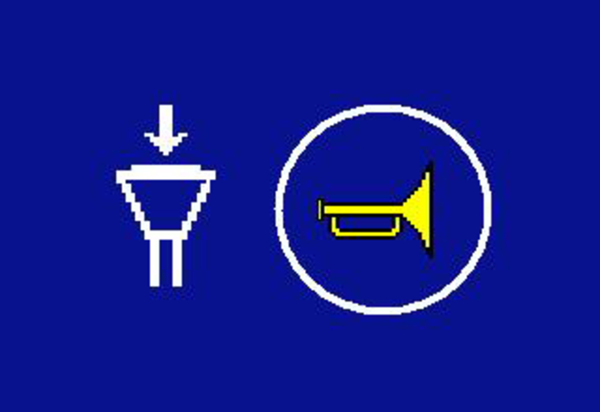

Verbindung nach längerer Funkunterbrechung wiederherstellen
Maschine mit Fernsteuerung Betrieb bedienen. |
Wenn Funkverbindung länger als 8 Sekunden unterbrochen wird:
Empfänger der Fernsteuerung Betrieb löst Not-Halt aus. | |
Anzeige Verbindungsfehler zur Fernsteuerung Betrieb wird am Bildschirm der Maschine eingeblendet: |
Funkverbindung wird automatisch wiederhergestellt. |
Wenn Funkverbindung aufgebaut ist:
Bildschirmseite Verbindungsaufbau bestätigen wird am Bildschirm der Fernsteuerung Betrieb eingeblendet: |

Fig. 4230: Bildschirmseite Verbindungsaufbau bestätigen
Fig. 4230: Bildschirmseite Verbindungsaufbau bestätigen
Taste Hupe am rechten Bedienhebel an Fernsteuerung Betrieb drücken. |
Fernsteuerung Betrieb ist eingeschaltet. |
Bedienhebel in Kabine sind deaktiviert. |
Verbindung zwischen Fernsteuerung Betrieb und Maschine wird aufgebaut. |
Wenn Verbindung erfolgreich aufgebaut ist:
Bildschirmseite Betrieb wird am Bildschirm der Fernsteuerung Betrieb eingeblendet: |